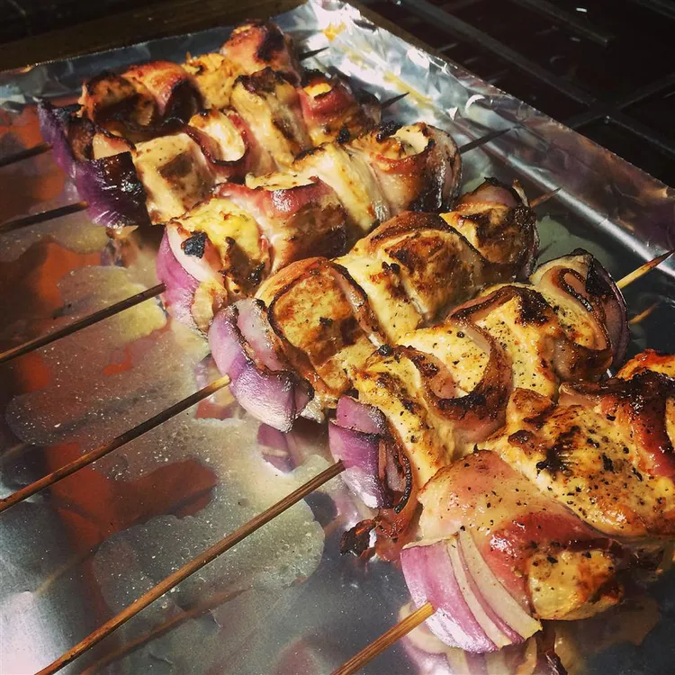

Bacon Ranch Chicken Skewers

Description
These bacon ranch chicken kabobs (aka skewers) are easy, interesting, and incredibly adaptable and were intended to star at your next tailgate cookout.
Ingredients
- ⅓ cup ranch dressing, plus more for dipping, if desired
- 1 teaspoon hot chile paste
- 4 skinless, boneless chicken breasts, cut into 1-inch cubes
- 24 (1-inch) pieces red onion
- 12 slices thick-cut bacon
- salt and black pepper, to taste
- 12 (6-inch) bamboo skewers, soaked in water for 2 hours
Steps
- Whisk 1/3 cup ranch dressing and hot chile paste together in a large glass or ceramic bowl. Add chicken cubes and toss to evenly coat. Cover the bowl with plastic wrap and marinate in the refrigerator for 1 to 3 hours.
- Preheat an outdoor grill for medium-high heat and lightly oil the grate.
- Remove chicken from marinade and shake off excess; transfer to a plate or baking sheet lined with paper towels. Pat chicken cubes dry with paper towels. Discard remaining marinade.
- Thread one piece of onion about 1 1/2-inches down one skewer.
- Thread one strip of bacon onto skewer at one end so the rest of the strip is hanging down. Thread one cube chicken onto skewer, then loop the bacon over chicken cube to form an "S" shape and thread the next portion of bacon onto the skewer. Continue to thread the bacon and chicken onto the skewer until entire strip of bacon is threaded, using 4 to 5 cubes of chicken.
- Thread one piece of onion onto the end of the same skewer.
- Repeat steps 4 through 6 for all twelve skewers. Season skewers with salt and pepper.
- Cook skewers on the preheated grill, turning every 3 to 4 minutes, until nicely browned on all sides and meat is no longer pink in the center, 12 to 16 minutes total per skewer. Serve with ranch dressing as a dipping sauce.